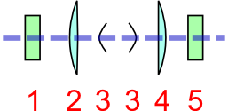

State of a container holding the sample under investigation.
A container is any object in the beam path which absorbs the beam and
whose contribution to the overall attenuation/scattering needs to be
determined to process the experimental data. Examples of containers
include glass capillary tubes, vanadium cans, windows in furnaces or
diamonds in a Diamond Anvil Cell. The following figures show a complex
example of a container:
A hypothetical capillary furnace. The beam passes from left to right
(blue dashes), passing through window 1, then window 2, before
passing through the downstream wall of the capillary. It is then
scattered by the sample with scattered beams passing through the
upstream wall of the capillary, then windows 4 and 5. As part of the
corrections for a PDF experiment it is necessary to subtract the PDF
of the empty container (i.e. each of the windows and the capillary).
To calculate the PDF of the empty container it is necessary to have
the measured scattering data and to know the nature (e.g. density,
elemental composition, etc.) of the portion of the container which
the beam passed through.¶

A complete description of the shapes of the container elements with
their orientation relative to the beam and also information on
whether they are upstream or downstream of the sample is also
therefore important. For example, although the windows 2 and 4 have
the same shape, the path taken through them by the beam is very
different and this needs to be modelled. Furthermore, it is not
inconceivable that windows might move during an experiment and thus
the changes to the beampath would need to be accounted for.¶
This class encodes the position of the container with respect to the
sample and allows the calculation of the beampath through the container.
It also includes sufficient data to model beam absorption of the
container and a link to a dataset containing a measurement of the
container with nothing inside, to allow data corrections (at a specific
beam energy/measurement time) to be made.
Chemical composition of the material the container is made from.
Specified using CIF conventions. Abbreviated version of CIF
standard:
Only recognized element symbols may be used.
Each element symbol is followed by a ‘count’ number. A count of
‘1’ may be omitted.
A space or parenthesis must separate each cluster of (element
symbol + count).
Where a group of elements is enclosed in parentheses, the
multiplier for the group must follow the closing parentheses.
That is, all element and group multipliers are assumed to be
printed as subscripted numbers.
Unless the elements are ordered in a manner that corresponds to
their chemical structure, the order of the elements within any
group or moiety depends on whether or not carbon is present.
If carbon is present, the order should be:
C, then H, then the other elements in alphabetical order of
their symbol.
If carbon is not present, the elements are listed purely in
alphabetic order of their symbol.
This is the Hill system used by Chemical Abstracts.
Details of beam incident on container, including the position
relative to the sample (to determine whether the container is
upstream or downstream of the sample).
Shape of the container. In combination with orientation this
should allow the beampath through the container to be modelled to
allow the adsorption to be calculated.
The angle the container makes to the beam and how it may change
during the experiment.In combination with shape this should allow
the beampath through the container to be modelled to allow the
adsorption of the container to be calculated.
reference_measurement: link (suggested target: /NXentry)
A link to a full data collection which contains the actual
measured data for this container within the experimental set up
(with no sample or inner container(s)). This data set will also
include the wavelength/energy, measurement time and intensity for
which these data are valid.